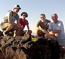
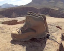

|
SP Crater, 2014
A hike up SP Crater, while on our 2014 trip
to the Basin and Range and the Colorado
Plateau. (2 minutes, 1280 x 720, 140 MB,
.mov) |
|

|
Grand Canyon, 2014
A hike into the Grand Canyon, while on our
2014 trip to the Basin and Range and the
Colorado Plateau. (2 minutes, 1280 x 720,
165 MB, .mov) |
|